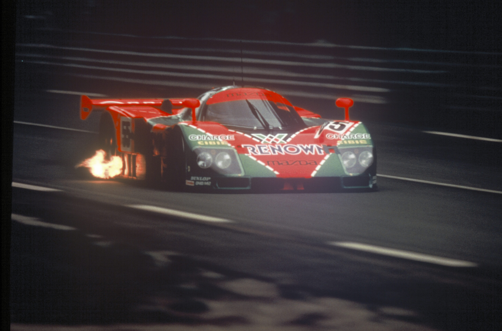
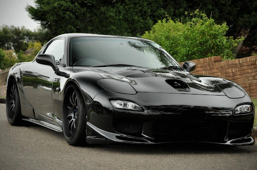
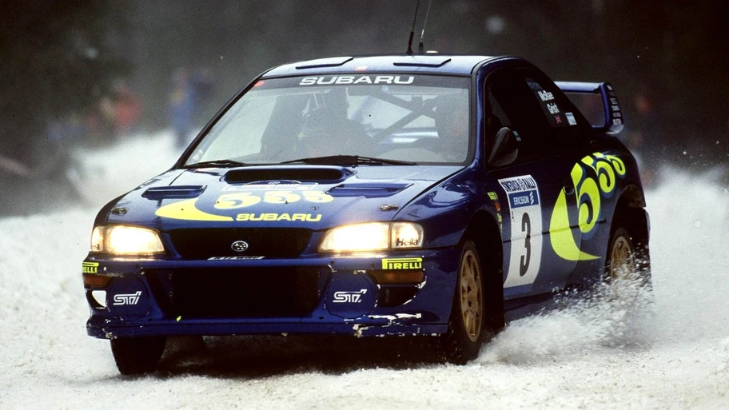

Mazda 787B: LA VICTORIA QUE DESAFIO LA LÓGICA |
| El Mazda 787B fue una obra maestra de ingeniería que desafió las convenciones del automovilismo en 1991. Equipado con un motor rotativo Wankel R26B de cuatro rotores, capaz de alcanzar hasta 9000 rpm y producir más de 700 caballos de fuerza, ofrecía una combinación única de potencia explosiva y ligereza mecánica. Su chasis de fibra de carbono, aerodinámica refinada y fiabilidad en largas distancias lo convirtieron en un contendiente formidable en las 24 Horas de Le Mans. |  |
Pilotos:Volker Weidler, Johnny Herbert y Bertrand Gachot |
| Mazda es una compañía japonesa fundada en 1920 en Hiroshima, originalmente dedicada a la producción de corcho bajo el nombre Toyo Cork Kogyo Co. Ltd. Con el tiempo, evolucionó hacia la fabricación de maquinaria y vehículos, y en 1931 lanzó su primer vehículo motorizado: el Mazda-Go, una pequeña camioneta de tres ruedas | El nombre “Mazda” fue adoptado oficialmente en los años 30, inspirado tanto en el apellido de su fundador, Jujiro Matsuda, como en el dios persa Ahura Mazda, símbolo de sabiduría y luz. A lo largo de su historia, Mazda se ha destacado por su espíritu innovador, especialmente en el desarrollo de motores rotativos Wankel, una tecnología que perfeccionó y llevó al mercado con modelos como el Mazda Cosmo Sport en 1967 y el icónico RX-7 en 1978. |
Mis carros favoritos |
|  |  |
Mazda RX-7:deportivo icónico de 1978 a 2002, famoso por su motor rotativo Wankel, que ofrece alta potencia y una conducción ágil debido a su ligereza y tracción trasera |
Subaru 22B (edición de rally, mi favorito):icónico y limitado modelo de 1998, fabricado para celebrar los logros de Subaru en el WRC, con un motor bóxer de 2.2 litros que produce 280 CV |